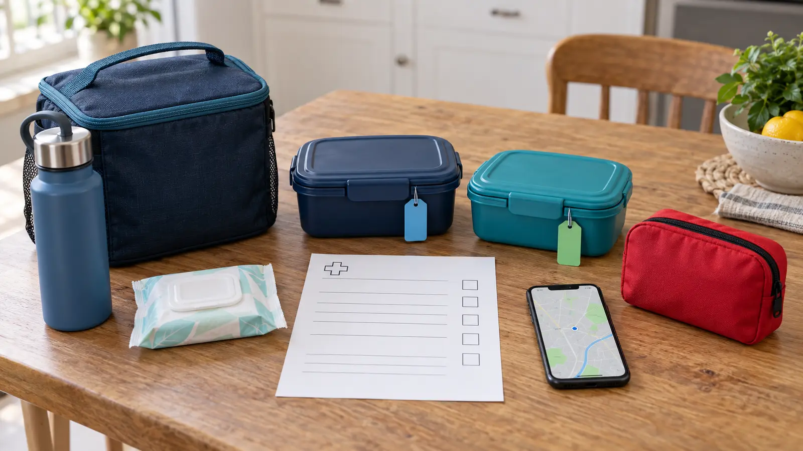

1. Current plan
A signed clinician-authored emergency care plan is current, readable and carried where another adult can find it.
DAY-TRIP SYSTEM · PLAN BEFORE FOOD
A destination is not allergy-ready because it sells snacks. Bring the child’s current care plan, one planned meal, one sealed backup and a clear adult owner for the medicine and exit.

Pack one planned meal or substantial snack for the expected time and one sealed backup that can replace it. “Two meals” is an operational margin, not a clinical recommendation. It prevents a delayed program, closed cafe or uncertain label from turning hunger into pressure to accept a food you would normally reject.
Both foods must already fit the child’s individualized plan. Do not use a family outing to trial a new ingredient, restaurant or treatment. Read the full current label every time, even on a familiar package. Ingredients and facilities can change.
The U.S. Food and Drug Administration identifies nine major food allergens: milk, eggs, fish, crustacean shellfish, tree nuts, peanuts, wheat, soybeans and sesame. Packaged foods regulated by FDA must list ingredients and follow specific allergen-labeling requirements. That makes the package a primary source, not a memory aid.
But more than 160 foods have been identified as causing allergy in sensitive people, and federal “major allergen” rules do not describe every individual risk. Restaurant food, bakery cases, shared scoops, bulk bins and transferred food add uncertainty. A “free-from” marketing phrase does not answer the child’s full plan or the possibility of cross-contact.
Keep original packaging with the food whenever practical. If you transfer a known safe food into a container, the responsible adult should retain the label or photograph the full ingredient panel and lot information. Do not use a decorative tag as a safety claim. A child’s name on a box prevents swaps; it does not make the contents safe.
Use the family cooler guide for food-temperature decisions, but keep medicine out of the food cooler unless the manufacturer, pharmacist or clinician specifically directs that storage. Temperature requirements are product-specific. Never leave prescribed medicine in a hot or freezing parked vehicle.
One adult owns the medicine and plan from door to door. A second adult, when present, owns food distribution and keeps shared snacks from drifting between children. Both know the exit route and emergency contacts. Do not say “it’s in the bag” without naming the bag and person.
School-age children can help by identifying their container, refusing unapproved food and telling an adult about symptoms. They should not carry the full burden for label interpretation, cross-contact questions or emergency treatment. Independence grows through rehearsed steps, not by making a child the only expert in the group.
Before activities begin, point out the medicine location, eating location, handwashing option, meeting point and exit. Confirm whether outside food and medicine are permitted. If a venue rule appears to block medically necessary items, contact guest services before the trip and document the agreed procedure. Do not surrender medicine to an unplanned location where the responsible adult cannot reach it promptly.
Keep food closed until the planned eating time. Choose a surface you can inspect and clean according to the family’s protocol. Do not place the child’s food beside communal snacks, and do not let another child’s helpful hand reach into the safe container. The family picnic-seating guide can help create a defined eating zone without adding a large setup.
Ask a manager or knowledgeable staff member clear questions about ingredients, preparation and cross-contact controls. Do not ask only, “Is this allergy friendly?” The useful answer describes what the kitchen can and cannot control. If staff cannot answer, equipment is shared in a way the child’s plan does not accept, or the order arrives differently than discussed, use the backup food.
There are only three acceptable outcomes: eat the verified option, eat the packed backup, or leave. Hunger and sunk ticket cost do not create a fourth answer. Avoid making a child watch adults debate whether a risk is “probably fine.”
Stop the activity, stay with the child and follow the signed emergency plan immediately. Use prescribed medicine exactly as trained and as the plan directs. Call 911 or local emergency services when the plan says to do so, and give the exact location. Do not delay a prescribed emergency response while searching online, driving toward home or waiting to see whether symptoms progress.
FARE’s emergency care plan is designed to list the person’s allergens, symptoms, treatment instructions and emergency contacts in a format others can follow. It is signed by a physician. A generic article cannot replace that individualized document. After any suspected reaction or medicine use, follow emergency and clinician instructions rather than resuming the outing.
Heat and cold affect both people and products. Protect food according to food-safety guidance and medicine according to its exact label, pharmacist and clinician instructions. If the destination has weak cell service, use the no-service day-trip plan and know where a reliable call can be made. Offline maps are not a substitute for emergency access.
For a long drive, keep the medicine and plan with the responsible adult, not under cargo. The road-trip packing system should protect access even when the vehicle is full. Rest stops are not the time to experiment with an unlabeled treat.
Leave when medicine is lost or damaged, the safe food is contaminated, staff cannot honor the agreed plan, a child develops symptoms, severe weather complicates emergency access, or the responsible adult no longer feels able to monitor the situation. Announce the exit without blame: “Our plan no longer works, so we are leaving.”
A backup activity at home is useful because it removes pressure to salvage the ticket. The broader family day-trip system uses the same principle: the exit is part of the itinerary, not proof that the day failed.
Postpone when the emergency plan is missing or outdated, prescribed medicine is unavailable or outside its usable condition, no adult understands the response, the destination will not permit required food or medicine, or the route cannot support the child’s medical needs. Contact the child’s clinician for individualized guidance before changing medicine, devices or activity restrictions.
MAKE THE WEEKEND COUNT
Build the day your family can finish well, then leave enough energy for the ride home.
More family plans